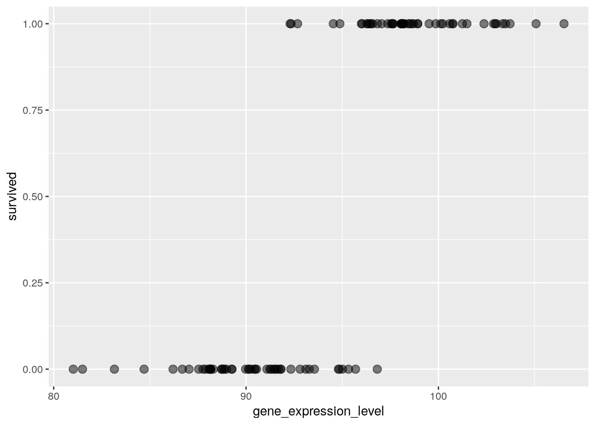
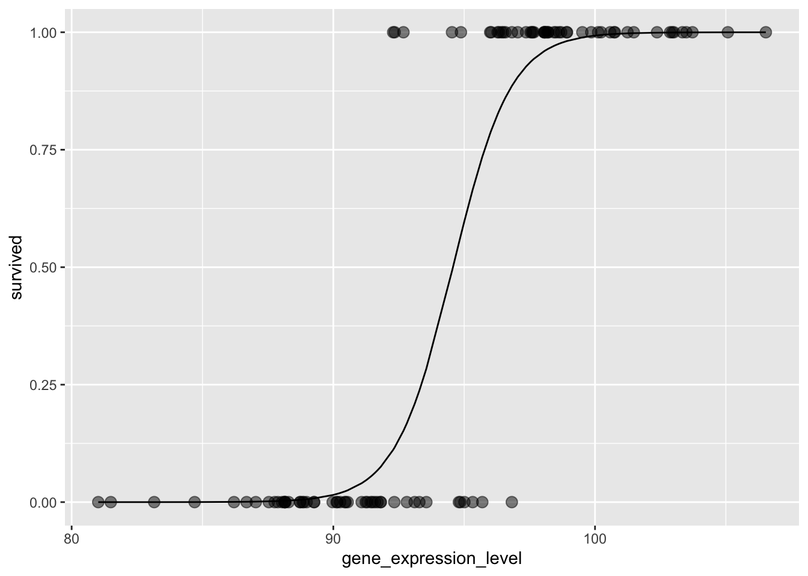

Primer on Logistic Regression in R
Logistic Regression
gravier_wide <- gravier |>
bind_cols() |>
as_tibble()
gravier_wide# A tibble: 168 × 2,906
g2E09 g7F07 g1A01 g3C09 g3H08 g1A08 g1B01 g1int1
<dbl> <dbl> <dbl> <dbl> <dbl> <dbl> <dbl> <dbl>
1 -0.00144 -0.00144 -0.0831 -0.0475 0.0158 -0.0336 -0.136 0.0180
2 -0.0604 0.0129 -0.00144 0.0104 0.0316 0.108 0.0158 0.0800
3 0.0398 0.0524 -0.0786 0.0635 -0.0395 0.0342 0.00288 0.0594
4 0.0101 0.0314 -0.0218 0.0215 0.0868 0.0272 -0.0160 0.0759
5 0.0496 0.0201 0.0370 0.0311 0.0207 -0.0174 0.111 -0.0469
6 -0.0664 0.0468 0.00720 -0.370 0.00288 0.0243 0.0909 0.0482
7 -0.00289 -0.0816 -0.0291 -0.0249 -0.0174 0.0172 -0.170 -0.00578
8 -0.198 -0.0499 -0.0634 -0.0298 0.0300 0.00144 -0.0529 -0.0401
9 0.00288 0.0201 0.0272 0.0174 -0.0000789 -0.0634 0.0370 0.0314
10 -0.0574 -0.0574 -0.0831 -0.0897 -0.101 -0.144 -0.167 0.0172
# ℹ 158 more rows
# ℹ 2,898 more variables: g1E11 <dbl>, g8G02 <dbl>, g1H04 <dbl>, g1C01 <dbl>,
# g1F11 <dbl>, g3F05 <dbl>, g3B09 <dbl>, g1int2 <dbl>, g2C01 <dbl>,
# g1A05 <dbl>, g1E01 <dbl>, g1B05 <dbl>, g3C05 <dbl>, g3A07 <dbl>,
# g1F01 <dbl>, g2D01 <dbl>, g1int3 <dbl>, g1int4 <dbl>, g1D05 <dbl>,
# g1E05 <dbl>, g1G05 <dbl>, g1C05 <dbl>, g1G11 <dbl>, g2D08 <dbl>,
# g2E06 <dbl>, g3H09 <dbl>, g2F09 <dbl>, g3G06 <dbl>, g2G08 <dbl>, …What if we wanted to understand how a continous variable like e.g. gene_expression_level of a given gene, determined whether the plant would survive or sucomb to heat shock at a given temperature? In that case, we would be interested in understanding survived yes/no as a function of gene_expression_level:
\[survived_{yes/no} \sim gene\_expresssion\_level\]
Moreover, we are interested in estimating the probability of survival given a certain gene_expression_level.
Data
As before, let’ us simply simulate some data and let’s say that we have 100 plants at 50 degrees celsius and the mean gene_expression_level for plants, which did not survive (denoted 0) was 90 and for those who did survive (denoted 1), it was 100:
set.seed(718802)
mean_survived_no <- 90
mean_survived_yes <- 100
survival_data <- tibble(
gene_expression_level = c(rnorm(n = 50,
mean = mean_survived_no,
sd = 3),
rnorm(n = 50,
mean = mean_survived_yes,
sd = 3)),
survived = c(rep(x = 0, times = 50), rep(x = 1, times = 50))
)
survival_data |>
sample_n(10)# A tibble: 10 × 2
gene_expression_level survived
<dbl> <dbl>
1 95.3 0
2 96.6 1
3 104. 1
4 93.6 0
5 95.0 0
6 91.8 0
7 90.2 0
8 88.2 0
9 86.2 0
10 89.3 0Visualising
As mentioned, we are interested in survived as a function of gene_expression_level, visualising this looks like so:
survival_data |>
ggplot(aes(x = gene_expression_level,
y = survived)) +
geom_point(alpha = 0.5,
size = 3)
Doing what we did before with a straight line evidently isn’t super meaningful. What we’re interested in understanding is at what gene_expression_level does the plant not survive/survive? Clearly, at e.g. 80, the plant does not survive and at 105 it clear does! But what about 95? Well, that isn’t really clear. Here, plants are both observed to survive and not-survive. What about 93? Here, most do survive, but not all, although it seems that there is more chance of not-surviving and vice versa for 97, than surviving. It’s this chance we’re interested in. So, at different values of gene_expression_levels, what is the probability of surviving-/not-surviving respectively? This is the quesion a logistic regression answers, so let’s get to it!
Modelling
To do a logistic regression, we use the glm()-function:
my_glm_mdl <- glm(formula = survived ~ gene_expression_level,
family = binomial(link = "logit"),
data = survival_data)
my_glm_mdl
Call: glm(formula = survived ~ gene_expression_level, family = binomial(link = "logit"),
data = survival_data)
Coefficients:
(Intercept) gene_expression_level
-86.0134 0.9095
Degrees of Freedom: 99 Total (i.e. Null); 98 Residual
Null Deviance: 138.6
Residual Deviance: 37.75 AIC: 41.75Now, with the model in place, we can visualise. Below here, the points are the observed data and the line is the model of how the probability of survival changes with gene_expression_level:
survival_data |>
mutate(my_glm_model = pluck(my_glm_mdl, "fitted.values")) |>
ggplot(aes(x = gene_expression_level, y = survived)) +
geom_point(alpha = 0.5,
size = 3) +
geom_line(aes(y = my_glm_model))
This allows us to answer the question from before:
- At
80, the plant does not survive? - At
105it clearly does! - What about
95? - What about
93? - Is it vice versa for
97?
predict.glm(object = my_glm_mdl,
newdata = tibble(gene_expression_level = c(80, 105, 95, 93, 97)),
type = "response") 1 2 3 4 5
1.755625e-06 9.999240e-01 5.962687e-01 1.932429e-01 9.010511e-01 So:
- At
80, the plant does not survive? TRUE, the probability of survival is close to zero - At
105it clearly does! TRUE, the probability of survival is close to one - What about
95? Around 60% survival probability - What about
93? Around 20% survival probability - Is it vice versa for
97? Around 90% survival probability
Again, this model object is a bit quirke, so broom to the rescue:
my_glm_mdl |>
tidy(conf.int = TRUE,
conf.level = 0.95) |>
mutate(estimate = exp(estimate))# A tibble: 2 × 7
term estimate std.error statistic p.value conf.low conf.high
<chr> <dbl> <dbl> <dbl> <dbl> <dbl> <dbl>
1 (Intercept) 4.41e-38 18.1 -4.74 2.11e-6 -130. -56.6
2 gene_expression_level 2.48e+ 0 0.191 4.76 1.97e-6 0.599 1.37